一、舌诊总览
舌诊是中医望诊的核心内容，通过观察舌质、舌苔、舌形、舌态及舌下脉络，
判断人体气血的盛衰、病邪的深浅、脏腑的虚实以及病势的进退。
如何看舌（三大要点）
- 看舌质 — 观虚实（颜色、润燥、形态）
- 看舌苔 — 观六淫（寒、热、湿、燥）
- 看舌形 — 观气血（凹陷、凸起、缺损）
舌质三辨
- 颜色：淡白、淡红、青紫（定寒热虚实）
- 形态：老嫩、胖瘦、齿痕、裂纹、芒刺（定虚实）
- 动态：歪斜、震颤、痿软、短缩（定气血与神机）
💡 舌诊要结合全身症状综合判断，单凭舌象不能确诊；本教学仅作辨识练习之用。
二、舌体分区（1/2/3 线）
三条主线
- 1线：将舌平均分为上 1/3 与中下 2/3 的横线
- 2线：将舌分为中 1/3 与下 1/3 的横线
- 3线：舌体中央纵线，对应任督二脉 / 脊柱
三焦划分
上焦（舌尖区）：心、肺、扁桃、颈
中焦（舌中区）：肝、胆、脾、胃、膻中
下焦（舌根区）：子宫、肚脐、腹股沟、肾、膀胱、生殖区
交点含义
- 1线与3线交点 → 肚脐（命门）
- 2线与3线交点 → 膻中（至阳）
舌体分区示意图 · 三线三焦
⚠ 舌边属肝胆，舌中属脾胃，舌尖属心肺，舌根属肾膀胱。这是看舌定位脏腑的基础。
三、望舌顺序
- 望舌质：先看舌体颜色（淡白/淡红/红/绛/青紫）
- 望舌苔：再看舌上苔垢（薄厚、润燥、色泽）
- 望舌下脉络：翘起舌尖，观察舌下青筋（瘀血、气滞）
- 望舌面分区：舌尖 → 舌中 → 舌根；舌边 → 舌中，对应脏腑定位
- 望形态动态：老嫩、胖瘦、裂纹、芒刺、齿痕、强硬、痿软
主线分布
- 主线 3 条（1线/2线/3线）
- 纵线 7 条（将舌体纵分为 7 列，定位脏腑更精确）
- 分区 25 格（3×7 之外的余格，按脏腑分布）
📖 提示：诊舌时让患者自然伸舌，舌面平展，不要用力；晨起未刷牙、未进食为佳。
四、看舌色
舌色主要反映气血的盛衰与寒热属性。
淡白舌
白色偏多，红色偏少
寒证
阳虚
气血虚
主病：寒证、阳虚；气血两虚、阳虚水泛
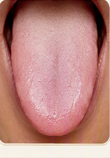
红舌
舌色鲜红，甚于淡红
热证
实热
阴虚火旺
主病：实热阴虚内热、阳亢阴虚
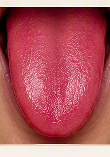
绛舌
深红，红中带暗
热盛
营血
湿热
主病：热入营血、热盛伤阴；湿热内蕴
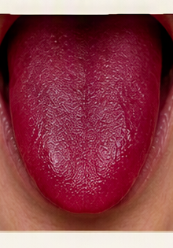
青紫舌
舌色青紫，或边尖有瘀斑
血瘀
寒凝
气滞
主病：气血运行不畅；血瘀、寒凝、痛证
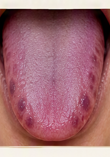
📌 正常舌色为淡红（参考图：tongues/tongue-02.png）；红主热、淡白主寒、青紫主瘀。
五、看舌形态
舌形反映气血的盈亏与脏腑的虚实状态。
| 舌形 | 特征 | 主病 |
|---|---|---|
| 老舌 | 舌质坚敛苍老，纹理粗糙 | 实证 热证 |
| 嫩舌 | 舌质浮胖娇嫩，纹理细腻 | 虚证 虚寒 |
| 胖大舌 | 舌体胖大、边有齿痕 | 水湿 脾虚 |
| 瘦小舌 | 舌体瘦小而薄 | 气血两虚 阴虚火旺 |
| 裂纹舌 | 舌面有纵横裂纹 | 热盛伤津 血虚 |
| 芒刺舌 | 舌面有红点突起如刺 | 热邪亢盛 血热 |
| 齿痕舌 | 舌边有牙齿印痕 | 脾虚 湿盛 |
| 强硬舌 | 舌体僵硬、屈伸不利 | 热入心包 中风先兆 |
| 痿软舌 | 舌体软弱、伸卷无力 | 气血虚极 筋脉失养 |
老舌
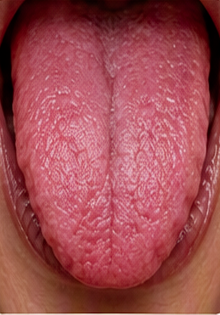
嫩舌
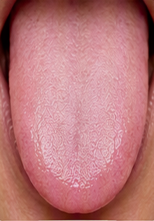
胖大齿痕
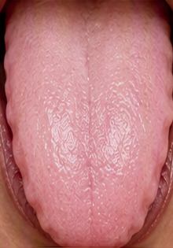
瘦薄舌
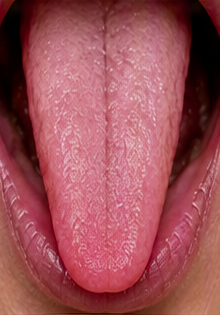
裂纹舌
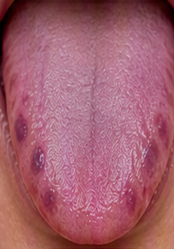
强硬舌
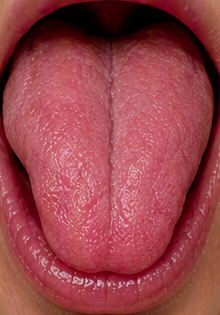
痿软舌
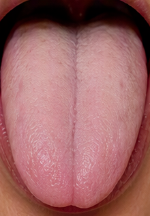
六、看舌苔
舌苔反映邪气的性质与深浅（寒、热、湿、燥）。
白厚苔
苔白厚如粉霜，遮盖舌体不能见底
主病：表湿、寒湿；苔厚遮盖不能见底，主寒湿内停
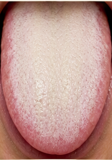
白厚腻苔
苔白而厚腻，致密颗粒细腻
主病：寒湿内困、痰饮内停、食积
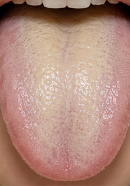
黄腻苔
苔黄厚腻，颗粒紧密黏腻
主病：湿热、痰热、食积化热
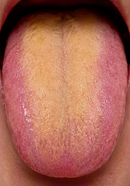
灰黑苔
苔色灰黑
主病：热极伤阴、阳虚阴盛、痰湿久郁
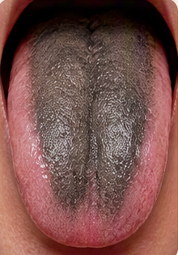
📌 正常舌苔为薄白苔（参考：tongues/tongue-14.png）；白主寒、黄主热、灰黑主重病。
七、正常舌象
正常舌象应同时满足以下 7 条：
- 粉红色 — 舌色淡红润泽
- 薄白苔 — 苔薄如烟，透过苔能见舌体
- 无缺损 — 舌体完整，无剥落
- 无凹凸 — 表面平整，无凹陷或凸起
- 无红点 — 不见瘀点或芒刺
- 无裂纹 — 舌面光润
- 饱满圆润 — 大小适中，伸缩灵活
💡 具备以上特征即为健康对照；出现任何偏差，结合症状进一步辨证。
八、常见异常舌象
| 异常象 | 主病 |
|---|---|
| 凹陷 | 气血不足 |
| 凸舌 | 胀气（气机不畅） |
| 缺损 | 脏腑功能失调 |
| 芒刺 | 热 或 淤堵 |
| 白苔 | 体内有寒 |
| 黄苔 | 体内有热 |
| 黄腻苔 | 体内有湿热 |
| 灰黑苔 | 里热 或 湿寒（重病） |
舌质辨病（颜色组合）
| 舌质 | 主病 |
|---|---|
| 舌质淡白 | 阳气不足，血虚 |
| 舌质红 | 有苔：实热 / 无苔：阴虚 |
| 舌质青紫 | 寒瘀偏青紫，血瘀偏紫 |
九、特殊舌形
三种常见特殊舌形，对应脊柱、心脑、肝胆的深层问题。
3线侧歪舌
舌中央 3 线向一侧偏移
小孩：注意脊柱侧弯
成人：注意中风、面瘫（特别是 40 岁以上人群）
心脑区缺损舌
舌尖（心脑区）出现缺口或凹陷
孩子：反应迟钝、注意力差、学习成绩一般
成人：记忆力差、心慌、胸闷、颈椎不适
老人：预防老年痴呆、心梗、脑梗
三角舌
舌形呈倒三角，前窄后宽
心脑区、肩周区、肝胆区缺损
肝气郁结，脾气差，易有乳腺增生
十、各区辨证详解
🔴 心脑区（舌尖）
- 舌形凹
- 供血不足（头晕脑胀、记忆力差）
- 舌尖缺损
- 气血不足（胸闷、心慌）
🦴 颈椎区（舌尖下）
- 舌形凹
- 颈椎变形
- 舌形凸
- 颈椎变形或富贵包
💪 肩周区（舌前两侧）
- 舌质红点
- 肩周淤堵，发紧
- 舌形缺损
- 气机不畅，酸胀
🌸 乳腺区（舌边前段）
- 舌质红点
- 乳腺增生
- 舌形凹陷
- 气血不足，胸下垂
🥣 脾胃区（舌中）
- 舌形凸起
- 胃气滞，积食
- 舌质白苔
- 脾胃虚寒
- 舌质黄苔
- 积食，口臭
- 舌质黄腻苔
- 积食，湿热，痰浊
🌬 肺区（舌前中）
- 舌形凹陷
- 肺气不足，免疫力差
- 舌形凸起
- 肺气滞，胸闷咳嗽
- 舌质裂纹
- 肺阴虚，干咳，皮肤干
🟢 肝区（舌边左中）
- 舌质红点
- 肝胆解毒功能弱
- 舌形凹陷
- 肝血不足
- · 孩子：肝主藏血，注意力差
- · 女子：肝主藏血，月经量少
- · 男子：肝主筋，阳痿
- · 老人：肝主筋，易抽筋
- 舌形凸起
- 肝气郁结（情志不畅、两肋胀痛）
🟡 胆区（舌边右中）
- 舌质红点
- 胆红素偏高
- 舌形凹陷
- 胆囊功能差
- 舌形凸起
- 胆汁排泄异常
🔴 肝胆区鼓胀（舌两侧明显肿胀鼓起）
- 肝气郁结：情志不畅，暴躁易怒
- 胆囊功能异常
- 肝主一身之气机，会影响脾胃功能
- 脾气升降 → 食欲受影响
十一、速查表
一页速记 · 关键信息一览。
舌色
| 舌色 | 主病 |
|---|---|
| 淡白 | 寒证、阳虚、气血虚 |
| 红 | 实热 / 阴虚火旺 |
| 绛 | 热入营血、热盛伤阴 |
| 青紫 | 血瘀、寒凝、气滞 |
舌苔
| 舌苔 | 主病 |
|---|---|
| 薄白 | 正常 / 表证 |
| 白厚 | 寒湿 |
| 白腻 | 寒湿内困、痰饮 |
| 黄腻 | 湿热、痰热、食积化热 |
| 灰黑 | 里热 / 湿寒（重病） |
舌形
| 舌形 | 主病 |
|---|---|
| 老 | 实证、热证 |
| 嫩 | 虚证、虚寒 |
| 胖大齿痕 | 脾虚湿盛 |
| 瘦薄 | 气血两虚、阴虚 |
| 裂纹 | 热盛伤津、血虚 |
| 芒刺 | 热邪亢盛 |
| 强硬 | 热入心包、中风先兆 |
| 痿软 | 气血虚极 |
分区定位
| 区位 | 对应脏腑 |
|---|---|
| 舌尖 | 心、肺（心脑区） |
| 舌中 | 脾胃 |
| 舌根 | 肾、膀胱、生殖区 |
| 舌边 | 肝、胆 |
⚠ 免责声明
本教学资料整理自用户提供的舌诊辨证图谱（含 AI 示意），非临床真实照片与权威教材，仅供中医舌诊辨识练习之用。
不能作为临床诊断或治疗依据。
辨证请结合全身症状、脉象、病史，由执业中医师面诊为准。
如有健康问题，请及时就医，勿自行诊断用药。
不能作为临床诊断或治疗依据。
辨证请结合全身症状、脉象、病史，由执业中医师面诊为准。
如有健康问题，请及时就医，勿自行诊断用药。